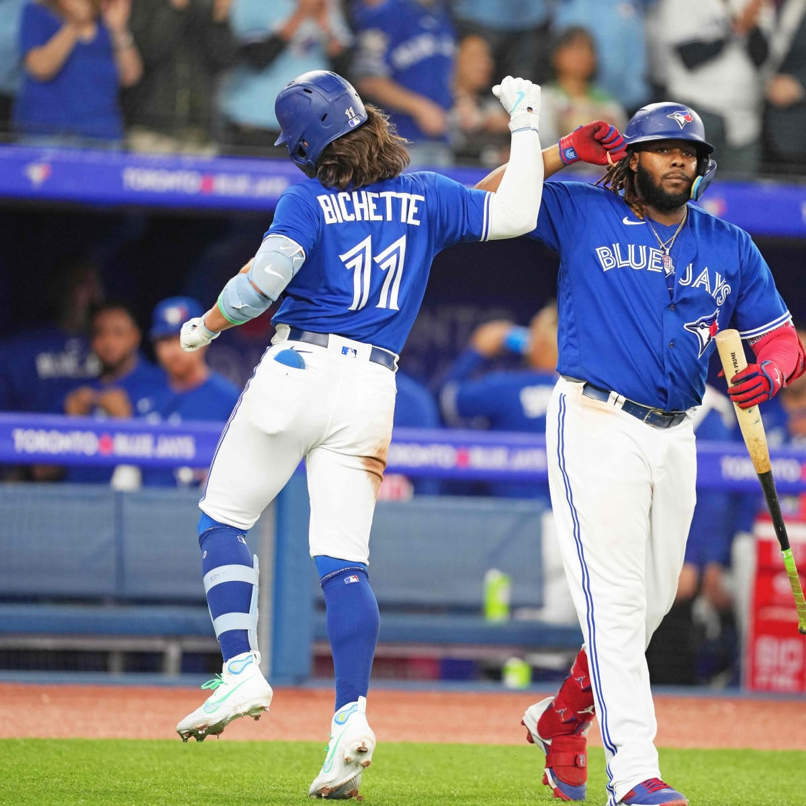
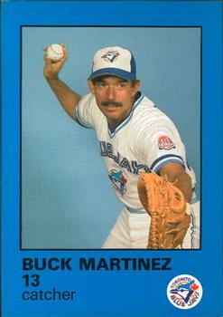
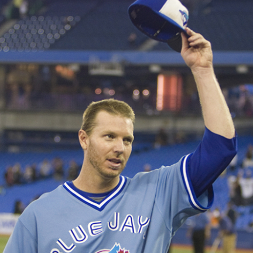

BASEBALL
Baseball is another popular sport in North America. Although baseball is considered one of the most popular sports even in Canada, there are very few professional players who come from Canada. The vast majority come from the US and Central and South America. However, Canada does have many minor leagues with local players.
LONDON MAJORS
The London Majors are a minor league baseball team in the IBL (Intercounty Baseball League). This league consists of 8 teams all based in Southern Ontario. The Majors won back-to-back IBL championships in 2021 and 2022. The Majors play in Labatt Memorial Park across the street from the Fork of the Thames in downtown London. The Labatt Memorial Park is considered the world's oldest baseball field still being used today and only underwent only minor changes from the way it was when it was first open in 1877!
TORONTO BLUE JAYS
The Toronto Blue Jays are the only MLB (Major League Baseball) team based in a Canadian city. The Blue Jays play in Rogers Center (formerly called SkyDome) next to the CN Tower in downtown Toronto. The arena is well known for its convertible-like roof that is typically open for most home games, but closes for rainy games and when the arena isn't being used.
The Blue Jays have made it to the World Series championships twice and won both times. They were in consecutive years in 1992 and 1993. Since then, the Blue Jays haven't had much success in the post-season, usually not making it at all or getting eliminated early in the playoffs, much like their hockey counterpart, the Leafs.

John ("Buck") Martinez - Buck played 17 seasons in the MLB starting in 1969 for Kansas City Royals until 1986 on the Blue Jays. After ending his playing career in Toronto, he was hired as the official announcer for the Blue Jays and still does that to this day at the age of 74!
Roger Clemens - Roger was a well-respected baseball pitcher who played most of his career on American teams but also played in Toronto for two years. He put up impressive records and stats and won awards for his incredible pitching. After those two years, he asked to be traded away to a team that would be more successful in winning a championship, and he was: to the Yankees where he then won two consecutive championships.

Buck Martinez
Roy Halladay - Roy was a pitcher on the Blue Jays for about 10 years starting in 1998 and then he played in Philadelphia for the last few years of his career. In 2017, a few years after he retired, Roy tragically died in a crash while flying his small plane near Florida.
Jose Bautista - Jose played on many different teams in the MLB, but spent the majority of his time on the Blue Jays, from 2008 to 2017. A memorable but controversial moment came in a 2015 post-season game in which Jose hit a big homerun which would win the game, and he threw his bat in the air while watching the home run. This act, which has been called the "bat flip", was appreciated by Jays fans but caused anger to the opposing team, the Texas Rangers.

Roy Halladay
Vladimir (Vladdy) Guerrero Jr. - Vladdy has been a member of the Blue Jays since his MLB career began in 2019. Vladdy is known for hitting a lot of home runs and being an instrumental member of the team. Vladdy's dad, also named Vladimir Guerreo, was a Hall of Fame MLB player from 1996 to 2011 who played on several teams but not the Blue Jays.
Bo Bichette - Bo has also been a member of the Blue Jays since starting his MLB career in 2019. Also like his friend and teammate Vladdy, Bo comes from a family of baseball players. Bo's dad was also a Hall of Fame player and Bo's younger brother has also played in the MLB. Bo has been another key member of the Blue Jays in these last few years.
George Springer - George has been in the league since 2014, starting on the Houston Astros and then coming to play in Toronto in 2021. His experience as a World Series champion from his time in Houston has been important in supporting the young Blue Jays roster.